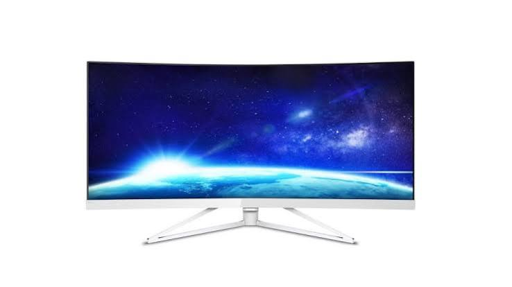
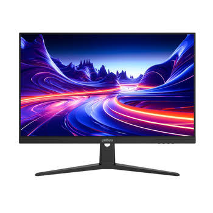
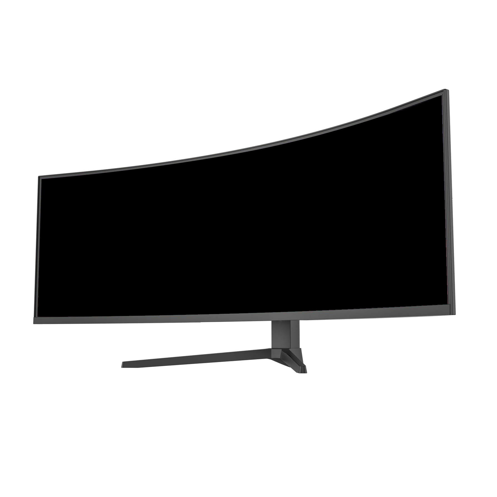

Monitor komputerowy to podstawowe urządzenie wyjściowe, które służy do wizualnej prezentacji danych, dokumentów, stron internetowych oraz obrazu generowanego przez kartę graficzną komputera.
Jakość obrazu zależy od wielu czynników, takich jak rodzaj matrycy (np. IPS, OLED, VA), rozdzielczość ekranu (np. Full HD, 4K), częstotliwość odświeżania oraz odwzorowanie barw.


Matryca jest jednym z najważniejszych elementów monitora. Odpowiada za wyświetlanie obrazu, kolory, kontrast oraz kąty widzenia. Na rynku można spotkać kilka podstawowych technologii.
Matryce IPS charakteryzują się dobrym odwzorowaniem kolorów oraz szerokimi kątami widzenia. Obraz pozostaje czytelny nawet wtedy, gdy patrzymy na monitor z boku.
Matryce VA oferują wysoki kontrast i głębszą czerń niż typowe matryce IPS. Dzięki temu dobrze sprawdzają się podczas oglądania filmów i grania.
Technologia OLED wykorzystuje piksele, które same emitują światło. Dzięki temu mogą całkowicie wyłączyć się podczas wyświetlania czerni.
Rozdzielczość określa liczbę pikseli wyświetlanych na ekranie. Im więcej pikseli, tym większa ilość szczegółów może zostać przedstawiona na monitorze.
| Rodzaj | Rozdzielczość | Liczba pikseli | Zastosowanie |
|---|---|---|---|
| HD | 1280 × 720 | 0,92 mln | Podstawowe zastosowania |
| Full HD | 1920 × 1080 | 2,07 mln | Gry i codzienna praca |
| QHD | 2560 × 1440 | 3,69 mln | Gry i praca |
| 4K UHD | 3840 × 2160 | 8,29 mln | Filmy i profesjonalna praca |
Rozdzielczość 4K zawiera cztery razy więcej pikseli niż Full HD. Oznacza to możliwość wyświetlenia większej liczby szczegółów, szczególnie na dużych ekranach.
Nie zawsze. Wyższa rozdzielczość wymaga większej mocy obliczeniowej karty graficznej. W grach może to oznaczać mniejszą liczbę klatek na sekundę.
Częstotliwość odświeżania informuje, ile razy w ciągu sekundy monitor aktualizuje wyświetlany obraz. Jednostką pomiaru są herce (Hz). Wyższa wartość pozwala uzyskać płynniejszy obraz, co jest szczególnie zauważalne podczas grania.
Standard spotykany w wielu monitorach biurowych i starszych modelach. Wystarcza do przeglądania internetu, oglądania filmów i pracy z dokumentami.
Popularny wybór wśród graczy. Obraz jest wyraźnie płynniejszy podczas szybkich ruchów, a sterowanie może wydawać się bardziej responsywne.
Monitory przeznaczone głównie dla wymagających graczy. Szczególnie przydatne w dynamicznych grach, gdzie liczy się szybka reakcja.
Monitor 144 Hz może odświeżyć obraz 144 razy w ciągu jednej sekundy. Dla porównania monitor 60 Hz robi to 60 razy. Różnica jest szczególnie widoczna podczas poruszania kamerą w grach.
Nie. Aby w pełni wykorzystać możliwości takiego monitora, komputer musi generować odpowiednio dużą liczbę klatek na sekundę. Przy słabszym sprzęcie różnica może być mniej zauważalna.
Monitory mogą być projektowane do różnych zastosowań. Inne cechy będą ważne dla gracza, a inne dla osoby pracującej z dokumentami lub grafiką.
Został zaprojektowany przede wszystkim z myślą o grach. Najczęściej oferuje wysoką częstotliwość odświeżania, niski czas reakcji oraz technologie synchronizacji obrazu.
Jest przeznaczony do codziennej pracy, nauki i korzystania z internetu. Ważna jest wygoda, czytelność tekstu oraz ergonomia.
Najpopularniejsze proporcje ekranów. Dobrze sprawdzają się podczas oglądania filmów, grania oraz codziennej pracy.
Szerszy ekran zapewnia więcej przestrzeni roboczej. Można wygodniej umieścić obok siebie kilka okien lub korzystać z szerszego pola widzenia w grach.
Bardzo szeroki format przypominający dwa monitory 16:9 ustawione obok siebie. Jest wykorzystywany między innymi do pracy wielozadaniowej i symulatorów.

Zakrzywienie ekranu ma sprawić, że jego krawędzie znajdują się bliżej pola widzenia użytkownika. Może to zwiększać komfort korzystania z bardzo szerokich monitorów, szczególnie podczas grania.
Wszystko zależy od zastosowania i osobistych preferencji. Zakrzywione modele są popularne wśród osób korzystających z dużych ekranów panoramicznych. Monitory płaskie są natomiast bardziej uniwersalne.
Czas reakcji określa, jak szybko piksel może zmienić swój stan. Krótszy czas reakcji pomaga ograniczyć smużenie podczas wyświetlania szybko poruszających się obiektów. Warto jednak pamiętać, że producenci mogą stosować różne metody pomiaru.
HDR (High Dynamic Range) to technologia pozwalająca przedstawić szerszy zakres jasności i kolorów. Dzięki niej jasne fragmenty obrazu mogą być bardziej szczegółowe, a ciemne sceny lepiej odwzorowane. Efekt zależy jednak od możliwości konkretnego monitora.
Technologie takie jak AMD FreeSync i NVIDIA G-SYNC synchronizują częstotliwość odświeżania monitora z liczbą klatek generowanych przez kartę graficzną. Pomaga to ograniczyć rozrywanie obrazu i poprawia płynność rozgrywki.
Rozmiar monitora podaje się w calach i mierzy po przekątnej ekranu. Popularne są modele 24, 27 i 32 cale. Większy ekran zapewnia więcej przestrzeni, ale powinien być dopasowany do odległości, z jakiej użytkownik na niego patrzy.
Piksel to najmniejszy element obrazu. Martwy piksel to punkt ekranu, który nie działa prawidłowo i może być widoczny jako mała plamka o niezmiennym kolorze lub czarna kropka.
HDMI i DisplayPort służą do przesyłania obrazu i dźwięku. USB-C może dodatkowo umożliwiać przesyłanie danych i zasilanie urządzeń. Starsze monitory mogą posiadać również złącze VGA lub DVI.
Jest to rozwiązanie ograniczające migotanie podświetlenia ekranu. Może poprawiać komfort korzystania z monitora podczas długiej pracy.